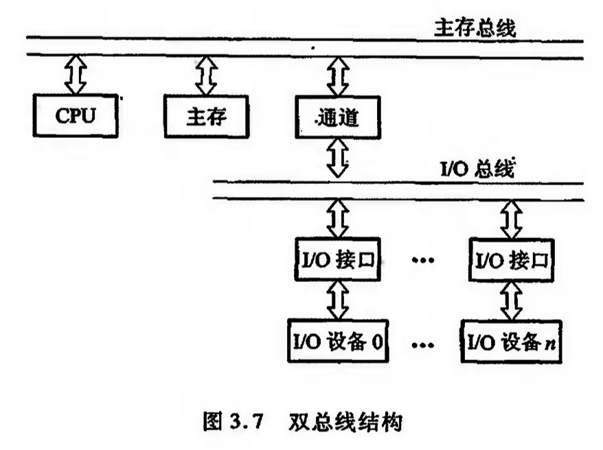
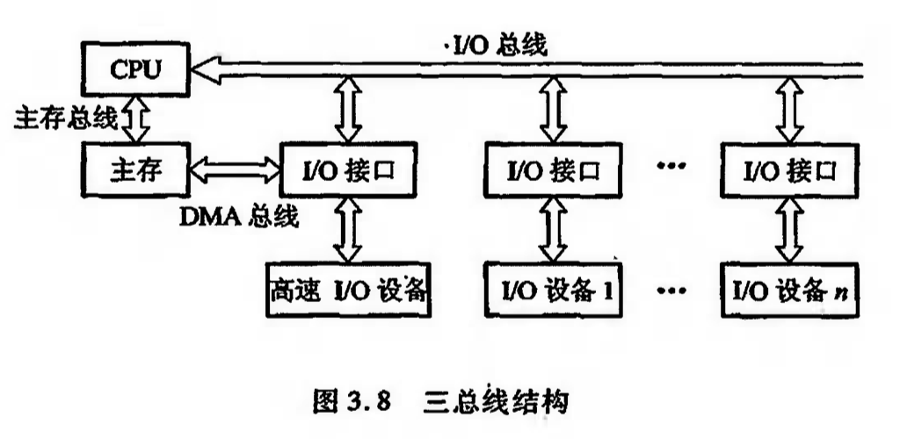
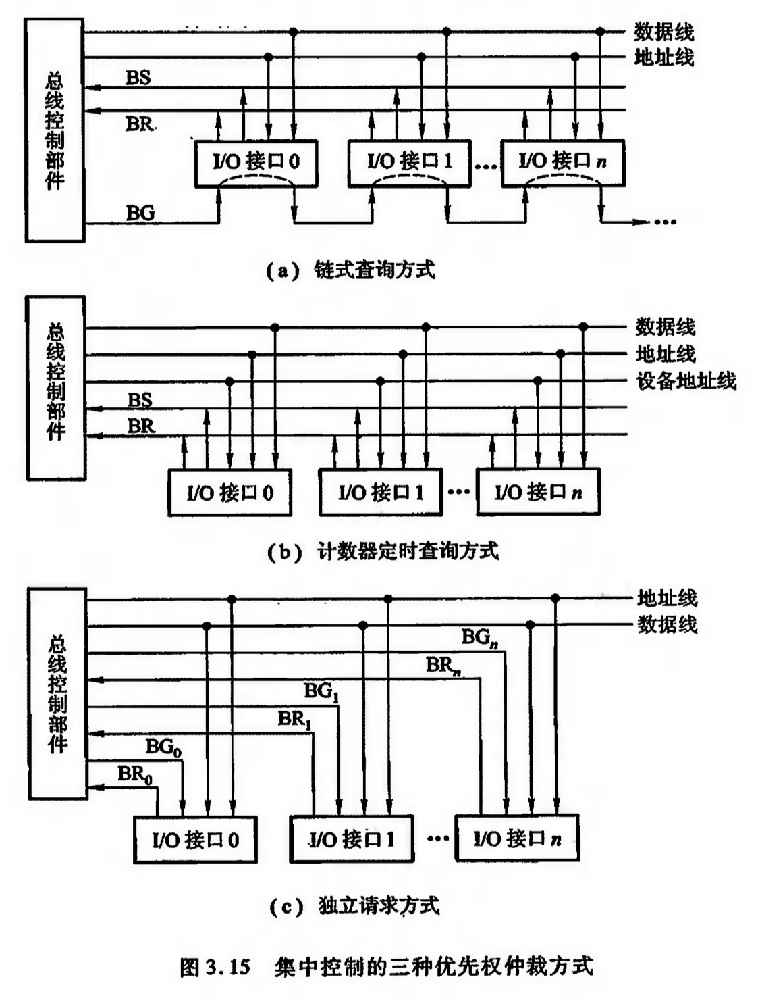

系统总线
基本概念：总线是连接多个部件的信息传输线，是各部件共享的传输介质。总线由许多传输线或通路组成，每条线可一位一位地传输二进制代码。
分类：片内总线/系统总线/通信总线
总线分类
- 片内总线：是芯片内部的总线
- 系统总线：按传输信息的不同分为：
- 数据总线：传输各功能部件之间的数据信息，是双向传输总线，其位数与机器字长、存储字长有关。数据总线的位数称为数据总线宽度（数据线数量之和）。每条数据线一次只能传输1为二进制数据。字长32位——数据总线宽度32位（根）
- 地址总线：用来指出数据总线上的源数据或目的数据在主存单元的地址或I/O设备的地址。地址总线上的代码用于指出CPU欲访问的存储单元或I/O端口的地址，由CPU输出，单向传输。64位系统——64位地址总线，最多可访问的存储单元数量：2^64个。（1个存储单元 = 1字节 = 8位）
- 控制总线：用来发出各种控制信号的传输线。对任一控制线而言，传输单向；对于控制总线总体来说可认为是双向的。控制总线的宽度决定了CPU对外部期间的控制能力。
- 通信总线：串行/并行通信
- 串行：单条1位宽的传输线上一位一位地按顺序分时传送。如：1字节的数据要通过一条传输线分8次由低位到高位按顺序逐位传送。适用于远距离传输。
- 并行：多条1位宽的传输线上同时传送。如：1字节的数据要通过8条并行传输线同时由源传送到目的地。适用于近距离传输。
- 二者传输速率
总线特性及性能指标
- 总线特性
- 总线由许多导线直接印制在电路板上，延伸到各个部件；
- 机械特性
- 电气特性：规定高低电平
- 功能特性：每根传输线的功能
- 时间特性：信号时序图
- 性能指标
- 总线宽度：数据总线根数
- 总线带宽：总线的数据传输速率，每秒传输信息的字节数
- 时钟同步/异步：总线上的数据与时钟同步/异步工作
- 总线复用：一条信号线上分时传送两种信号
- 信号线数：地址总线/数据总线/控制总线三种总线数的总和
- 总线控制方式：包括突发工作、自动配置、仲裁方式、逻辑方式、计数方式等
- 其他指标：负载能力、电源电压、总线宽度能否扩展等
总线结构
- 单总线结构
- 双总线结构：将速度较低的I/O设备从单总线上分离出来，形成主存总线与I/O总线分开的结构

多总线结构：将速率不同的I/O设备进行分类，然后将他们连接在不同的通道上

总线控制
包括判优控制和通信控制
总线判优控制
分为集中式和分布式，前者将控制逻辑集中在一处，后者将控制逻辑分散在与总线连接的各个部件或设备上。
BS 总线忙；BR 总线请求；BG 总线同意。
三种常见的集中控制优先权仲裁方式：
链式查询：如果BG到达的接口有总线请求，BG信号就不再往下传，意味着该接口获得了总线使用权并建立总线忙BS信号，表示它占用了总线。
离总线控制部件最近的设备具有最高的优先级。
计数器定时查询：总线控制部件接到由BR送来的总线请求信号后，在总线未被使用(BS=0)的情况下，总线控制部件中的计数器开始计数，并通过设备地址线，向各设备发出一组地址信号。当某个请求占用总线的设备地址与计数值一致时，获得总线使用权，终止计数查询。
独立请求方式：每一台设备均有一对总线请求线BR$_i$和总线同意线BG$_i$，当设备要求使用总线时，便发出该设备的请求信号。
总线控制部件中有一排队电路，可根据优先次序确定响应哪一台设备的请求。

总线通信控制
争夺总线使用权：按各部件的优先级解决。
通信时间：分时方式，以获得总线使用权的先后顺序分时占用总线。
通信周期：完成一次总线操作的时间，分4个阶段，
- 申请分配阶段：由需要使用总线的主模块提出申请，经总线仲裁机构决定下一传输周期的总线使用权授予某一申请者
- 寻址决断：取得了使用权的主模块通过总线发出本次要访问的从模块（或从设备）的地址及有关命令，启动参与本次传输的从模块
- 传数阶段：主模块和从模块进行数据交换，数据由源模块发出，经数据总线流入目的模块
- 结束阶段：主模块的有关信息均从系统总线上撤除，让出总线使用权
对仅有一个主模块的简单系统，无须申请、分配和撤除，总线使用权时钟归其所有
对于包含中断、DMA控制或多处理器的系统，还需要有其他管理机构参与
四种总线通信控制方式：同步/异步/半同步/分离式通信
同步
通信双方由统一时标控制数据传送。
时标常由CPU的总线控制部件发出，送到总线上的所有部件；也可由各个部件各自的时序发生器发出，但必须由总线控制部件发出的时钟信号对他们进行同步。
异步
允许各模块速度的各不一致，没有公共的时钟标准，不要求所有部件严格的统一的操作时间，而是用应答方式（握手方式）。即当主模块发出请求信号时，一直等待从模块反馈回来“响应”信号后，才开始通信。
异步通信方式分为不互锁、半互锁和全互锁三种类型
| 类型 | 主模块撤销请求 | 从模块撤销回答 |
|:——-:|:———————:|:——————-:|
| 不互锁 | 不必等回答，自动 | 不必等回答，自动 |
| 半互锁 | 必须等回答 | 不必等回答，自动 |
| 全互锁 | 必须等回答 | 必须等回答 |半互锁方式是主模块发出请求信号后必须等待从模块的回答信号后再撤销其信号请求
异步通信的数据传送速率用波特率来衡量。波特率是单位时间内传送二进制数据的位数，单位bps（位/秒），记作波特。
若只考虑有效数据位（只计算数据位），异步串行通信的数据传输速率用比特率来衡量，即单位时间内传送二进制有效数据的位数，单位bps
半同步通信
既保留了同步通信的基本特点，如所有的地址、命令、数据信号的发出时间，都严格参照系统时钟的某个前沿开始，而接收方都采用系统时钟后沿时刻来进行判断识别。同时又像异步通信那样，允许不同速度的模块和谐地工作。为此增设了一条“等待”(WAIT)响应信号线。
分离式通信
将一个传输周期分解为两个子周期：
子周期1：主模块申请占用总线，发送命令、地址以及其他信息包括该主模块编号到系统总线上，使用完后即放弃总线的使用权；由从模块接收信息。
子周期2：从模块申请占用总线，经选择、译码、读取等操作后，将主模块所需的数据送至总线上。
两个传输子周期都只有单方面的信息流，每个模块都变成了主模块。